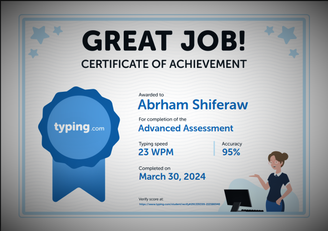

About Me
Hello! I'm Abraham Shiferaw, a student pursuing a degree in Software Engineering
with a passion for web development. I have been actively exploring the field and gaining practical
experience
through various online platforms, including FreeCodeCamp, Simplilearn, and Great Learning.
Let me share some more about my journey so far.
Background and Projects
Throughout my academic journey, I have been fully immersed in learning the foundations of software engineering.
In parallel, I have also taken on several hands-on projects through platforms like FreeCodeCamp, Simplilearn,
and Great Learning. These projects have allowed me to apply the concepts I've learned in real-world scenarios,
strengthening my skills and fostering a deep understanding of web development.
One project I completed on FreeCodeCamp was building a responsive website using HTML, CSS, and JavaScript.
Through this project, I gained valuable experience in front-end development, including creating intuitive user interfaces
and implementing interactive features.
Skills and Areas of Expertise
I have developed a strong foundation in core web technologies, including HTML, CSS, and JavaScript. Additionally,
I have acquired proficiency in front-end frameworks like Bootstrap,
enabling me to build dynamic and interactive web applications.
As a student of software engineering, I am also well-versed in software development principles, algorithms, and data structures.
This knowledge equips me to approach projects with a comprehensive understanding of software engineering best practices.
My Aproach to Web development And Technology
My Approach toI have a meticulous approach to web development, prioritizing clean and efficient code.
I believe in the power of well-structured and modular code,
which not only enhances the maintainability of projects but also ensures scalability and extensibility.
I am dedicated to staying updated with industry trends and emerging technologies,
always seeking opportunities to expand my skill set and deliver innovative solutions toward Technology
Education and Certifications
Currently, I am pursuing a degree in Software Engineering, which provides me with a solid theoretical
foundation in Software Enginering and software development. Additionally,
I have completed certifications on platforms like FreeCodeCamp, Simplilearn,
and Great Learning, which have further enriched my knowledge and practical skills. some of my
certificates are below



My Interests and Hobbies
Outside of my academic pursuits, I have a strong passion for exploring new technologies and staying up to date
with the latest advancements in the industry. I am an avid reader of tech blogs and enjoy participating in coding competitions.
In my free time, I also contribute to open-source projects,
as it allows me to collaborate with fellow developers and contribute to the broader software development community.
Contact Me
I am always excited to connect with like-minded individuals, industry professionals, and potential collaborators.
If you have any questions, project ideas, or opportunities, please feel free to reach out to me. You can connect with me on LinkedIn to learn more about
my projects and academic journey.
Contact